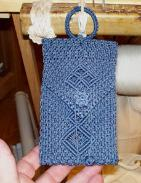
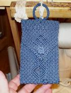

Frayed Knot Arts
Welcome to all, and thank you for stopping by to look over my wares. I have been doing fancy-work on-and-off for over fifty-five years, ever since I was initially taught it by an old sailor who lived quite close to me. I used the know- ledge through my Navy days and have now taken it up again as a full-time business. I make belts, lanyards, wheel-coverings, tiller-wraps, hand-rail wraps, bellropes of varying complexity, instrument straps, camera straps, luggage slings.... if you can do it with a piece of line, I've probably either made it or seen it. I can do MacNamara's lace and mast skirts, but they tend to get verrrry expensive due to the great amount of time involved.